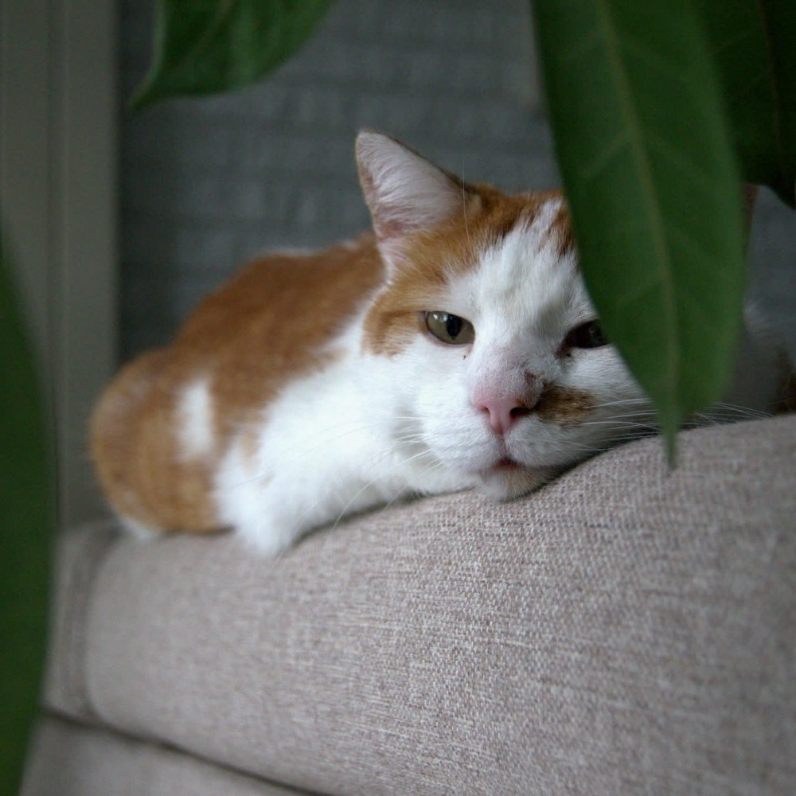
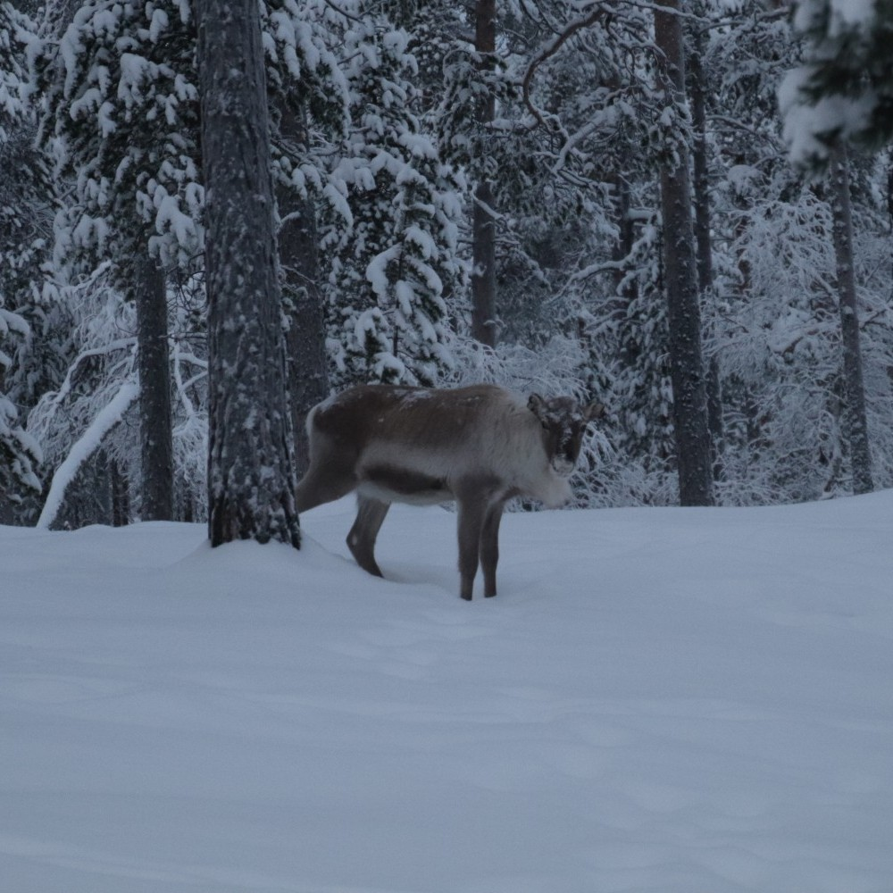
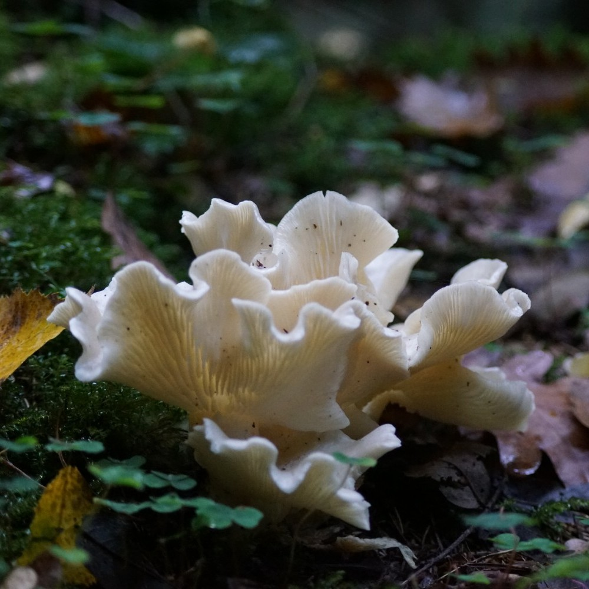
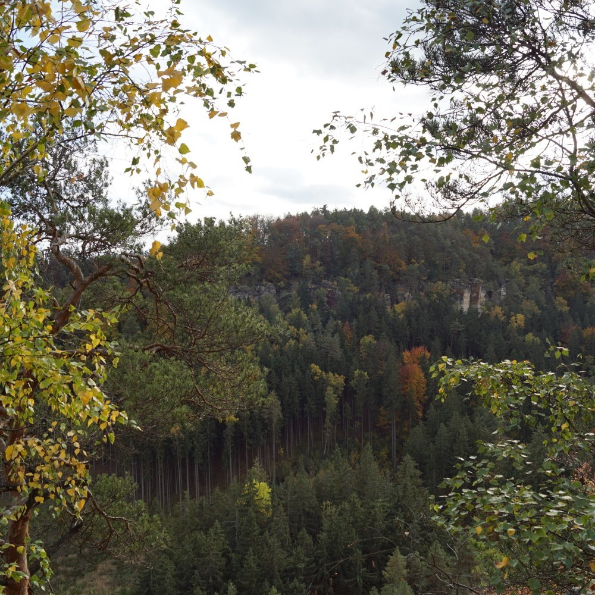
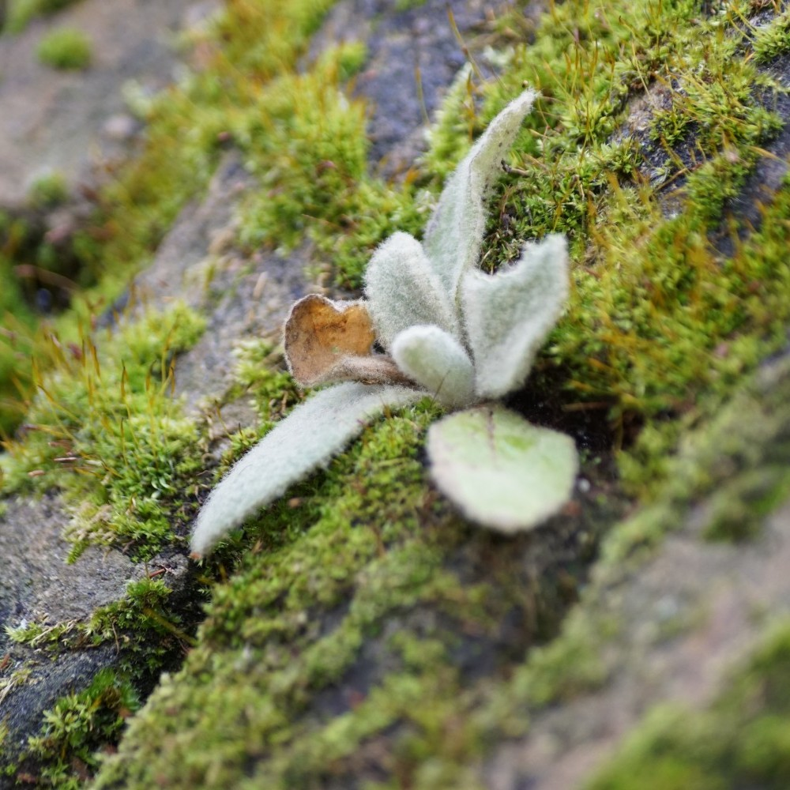
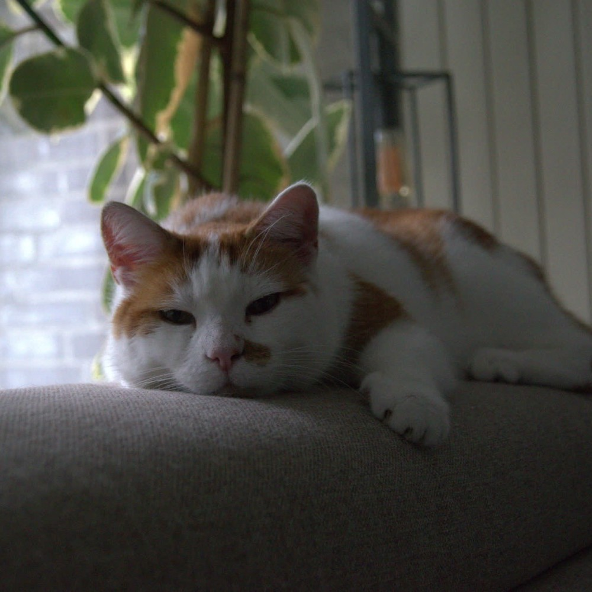
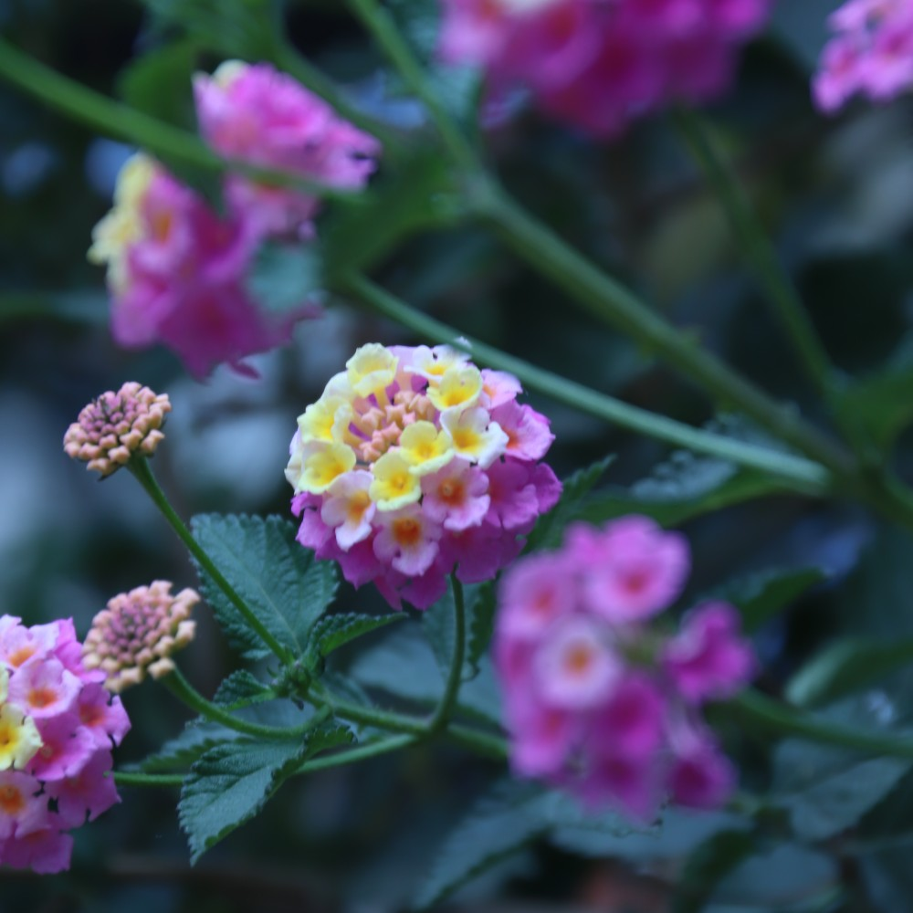

Photography Gallery
A small collection of photographs I have taken over the years, these photos range from nature and animals to landscapes and interesting plants. I hope you like the photos I have taken.
More photos will be added over time. So you can check back every now and then to see if anything has changed.
Photo collection








